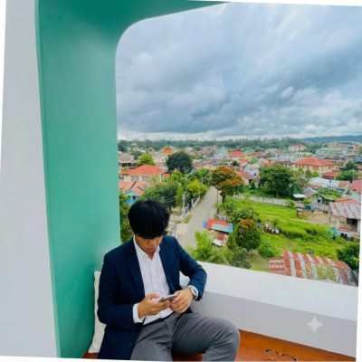
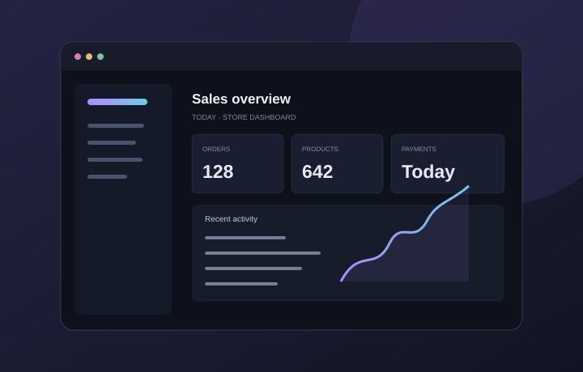
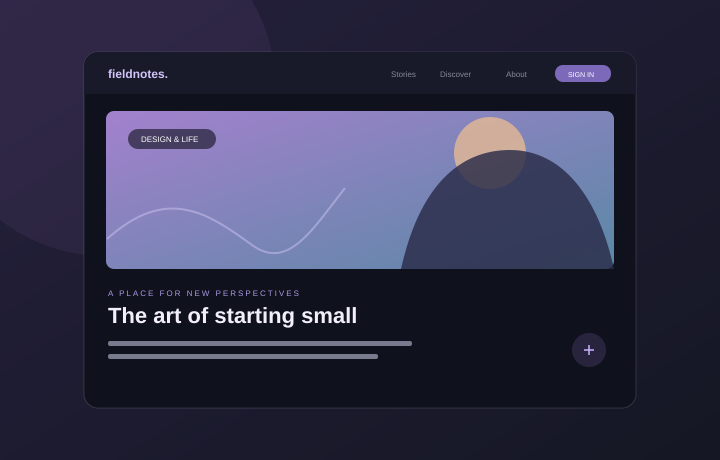
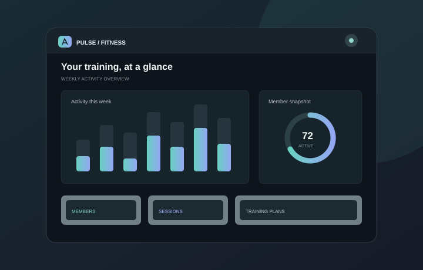

HELLO, I'M
Thwin Htoo
Aung.
Junior Full-Stack / Web Developer
I turn ideas into thoughtful digital experiences—combining clean code, considered design, and a curiosity to keep getting better.
Open to opportunities

</>building
what's next
{"code": "with care"}
Myanmar
what's next
A LITTLE ABOUT ME
Curiosity in.
Good work out.
I’m a web developer from Myanmar who loves making useful things for the web.
My goal is to join a team where I can contribute, learn from others, and grow into a thoughtful full-stack developer.
I enjoy the process of turning a rough idea into a polished, responsive experience. I’m building my skills across frontend and backend development, with a focus on practical projects, readable code, and details that make a product easier to use.
Every project is a chance to learn something new—from shaping a clean interface to understanding how data moves behind it. I’m currently looking for a web development internship, a junior developer role, or a remote opportunity where I can keep learning and make a real contribution.
showcased
and practised
& improving
Project and skill counts describe this portfolio's listed examples; edit them to match your current experience.
MY TOOLKIT
Skills I'm growing.
A practical toolkit in progress.
Honest about what I know—and what I'm learning.
Learning & building
Frontend
Interfaces that feel clear, responsive, and considered.
Learning & building
Backend
Exploring server-side development and application logic.
Practising
Databases
Working with structured and document-based data.
Foundations
Programming
Building problem-solving fundamentals across languages.
Applied in projects
Workflow & more
Tools and practices I use to build and share web projects.
SELECTED WORK
Ideas into projects.
A few practical concepts that bring
together what I'm learning.

01 / 03Supermarket POS System
A point-of-sale concept for managing products, shopping carts, orders, payments, and receipts.

02 / 03Blog Website
A blog platform concept with accounts, posts, image uploads, and ways for readers to interact.

03 / 03Fitness Management System
A system concept for organizing fitness activities, member information, and training details.
These are project descriptions, not linked live deployments. Replace each profile/demo link and status with the relevant repository, demo, and current project progress.
THE JOURNEY
Learning by
doing.
A growing foundation—and plenty of room for what comes next.
DATE — UPDATEPROFESSIONAL EXPERIENCE
Web Development Internship
Use this entry for an internship when applicable. Add organization, dates, responsibilities, and outcomes; remove it if not relevant.
Editable placeholderDATE — UPDATEEDUCATION
Relevant IT Education
Add your institution, qualification, study dates, and relevant coursework here.
Editable placeholderIF APPLICABLEQUALIFICATION
NCC Level 5
Include your NCC Level 5 qualification and awarding institution if applicable; otherwise remove this entry.
Confirm details before publishingONGOINGPERSONAL DEVELOPMENT
Learning through building
Practising full-stack fundamentals through project work, self-study, and continuous exploration of web technologies.
Current focusDATE — UPDATECERTIFICATIONS
Relevant Certifications
Add verified certifications and completion dates, or remove this entry if you have none to list.
Editable placeholderHAVE A ROLE OR IDEA?
Let's build
something good.
I'm open to internship, junior developer, and remote opportunities. If you think we could work well together, I'd love to hear from you.